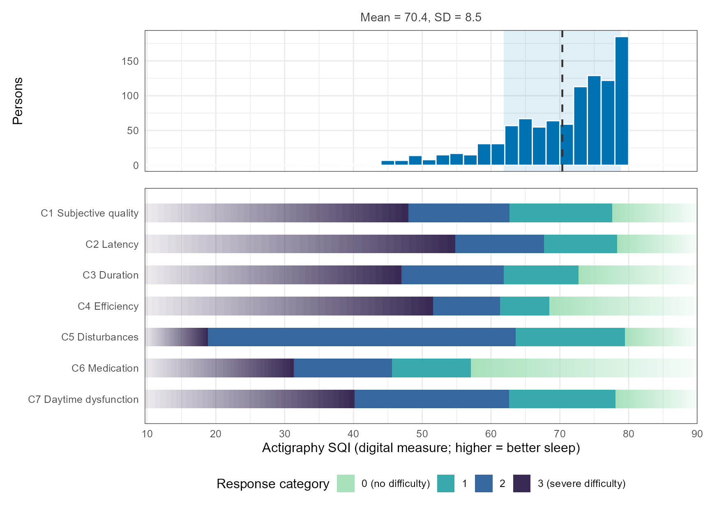

Sleep example: actigraphy SQI read on the PSQI components
Source:vignettes/sleep-simulation.Rmd
sleep-simulation.RmdThis vignette walks through the worked example of the manuscript: a simulated data set (n = 1000) in which seven PSQI component scores (C1 to C7, 0 to 3) and an actigraphy sleep-quality index (SQI, higher = better sleep) are driven by one latent sleep-disturbance trait. The generating SQI curve is the quadratic 72 − 8η − 1.5η² with residual SD 6; it is used only as the truth.
The light steps below run when the vignette is built. The bootstrap
and the simulation study take tens of minutes to hours and are shown,
not run; the full analysis scripts are in
system.file("scripts", package = "caliber").
Data
The data ship with the package as the data set
psqi_sleep (see ?caliber::psqi_sleep).
sleep_data() returns it without the true trait, which
sleep_eta_true() keeps apart for evaluation.
Step 2: the monotone SQI curve, MS-Fixed
MS-Fixed holds the items at the PSQI-only estimates and integrates
the latent trait out over p(η | C, SQI) at every boosting iteration. It
is the recommended primary analysis; MS-Joint
(mode = "joint") is the robustness check and MS-EAP
(mode = "eap") the naive comparator.
fit_three() fits all three.
fit <- fit_ms(grm, Y, sqi, mode = "fixed")
c(iter = fit$iter, df = round(fit$df, 2), sigma0 = round(fit$act$sigma, 2),
g1 = round(fit$act$log_sigma[2], 3))
#> iter df sigma0 g1
#> 1046.00 4.46 5.74 -0.06
round(mu_sqi(-3:3, fit$act), 1)
#> [1] 79.5 79.5 78.3 72.7 62.5 48.7 28.7Alternative curve: Ramsay’s monotone regression splines
fit_ms(curve = "ispline") replaces the boosting by
Ramsay’s (1988) monotone regression splines: μ(η) = β0 − Σ a_m I_m(η)
with a_m ≥ 0, I-splines of order 2 on a few interior knots at quantiles
of N(0, 1) (median, terciles, …), fitted by maximum likelihood under the
bounds. The number of knots is chosen by AIC among 0 to 5. The three
ways of handling the latent trait are the same.
fit_i <- fit_ms(grm, Y, sqi, mode = "fixed", curve = "ispline")
fit_i$path[c("n_knots", "deviance", "df", "aic")]
#> n_knots deviance df aic
#> 1 0 20969.53 4 20977.53
#> 2 1 20959.55 5 20969.55
#> 3 2 20956.96 6 20968.96
#> 4 3 20955.14 7 20969.14
#> 5 4 20955.04 8 20971.04
#> 6 5 20955.03 9 20973.03
c(n_knots = fit_i$n_knots, sigma0 = round(fit_i$act$sigma, 2),
g1 = round(fit_i$act$log_sigma[2], 3))
#> n_knots sigma0 g1
#> 2.000 5.870 -0.034
round(rbind(boosting = mu_sqi(-3:3, fit$act), ispline = mu_sqi(-3:3, fit_i$act)), 1)
#> [,1] [,2] [,3] [,4] [,5] [,6] [,7]
#> boosting 79.5 79.5 78.3 72.7 62.5 48.7 28.7
#> ispline 83.3 81.2 77.6 72.3 62.6 49.7 33.8Step 3: interpretation in SQI units
Each GRM threshold b_jk is placed on the SQI scale at s_jk = μ(b_jk).
thr <- threshold_locations(fit$a, fit$d, fit$act)
dimnames(thr$sqi) <- list(items, paste0("k", 1:3))
round(thr$sqi, 1)
#> k1 k2 k3
#> C1 77.6 62.7 48.0
#> C2 78.3 67.7 54.8
#> C3 72.7 61.8 47.0
#> C4 68.5 61.3 51.6
#> C5 79.5 63.6 18.9
#> C6 57.0 45.6 31.3
#> C7 78.1 62.6 40.2The probabilistic crosswalk gives the expected PSQI response pattern at a given SQI, averaging over the latent values compatible with it.
cw <- crosswalk(c(50, 60, 70, 80), fit$a, fit$d, fit$act, items, total_name = "PSQI")
round(cw[c("SQI", "E_PSQI", "Estar_PSQI")], 2)
#> SQI E_PSQI Estar_PSQI
#> 1 50 13.30 14.39
#> 2 60 9.69 11.30
#> 3 70 6.24 7.04
#> 4 80 4.01 NA
th <- data.frame(item = rep(items, 3), k = rep(1:3, each = 7), sqi_est = c(thr$sqi))
pv <- plausible_values(fit, grm, sqi, seed = 20261004)
wright_map_sqi(mu_sqi(pv, fit$act), th, sleep_item_labels)
Wright map on the SQI scale, MS-Fixed.
Intervals
Item parameters, thresholds within the data and the crosswalk get intervals from draws of the normal approximation of the estimates:
vc <- ms_vcov(fit, Y, sqi)
iv <- ms_intervals(fit, vc, function(a, d, act) {
s <- threshold_locations(a, d, act)$sqi
setNames(c(s), paste0("s_", threshold_names(items)))
}, n_draw = 2000, seed = 1)These draws condition on the selected boosting path and miss most of the sampling variance of the curve itself (SD of μ̂(0) 0.26 against a true 0.61), so curve bands come from the nonparametric bootstrap, which refits every step:
boot <- ms_bootstrap(Y, sqi, n_boot = 200, keep_categories = FALSE, cores = 4)
boot_intervals(boot, "MS-Fixed", paste0("mu(", -3:3, ")"))Neither kind of interval has been validated by a coverage simulation. The top thresholds of C5, C6 and C7 lie beyond the data and should be reported as beyond data support, not with an interval.
Simulation study
inst/scripts/sleep_simulation.R runs six scenarios × 200
replications (about 3 hours on 4 cores) and
sleep_simulation_summary.R makes the tables and figures.
One replication:
d <- simulate_scenario(s = 4, r = 1) # gentle logistic truth
f <- fit_three(d$Y, d$sqi)
tr <- scenario_truth(4, seq(15, 95, by = 0.5))
sqrt(mean((threshold_locations(f$`MS-Fixed`$a, f$`MS-Fixed`$d, f$`MS-Fixed`$act)$sqi - tr$thr)^2))